Linear Mixed-Effect (lme)
Menggunakan jamovi (Module GAMLj)
2026-06-25
Outline 1️⃣
- Struktur data berjenjang/bersarang (hierarchical/nested data)
- Within dan between group variance
- Pengantar linear mixed-effect (
lme) - Intra-class correlation dan likelihood ratio test (LRT)
- Membandingkan garis regresi antar kelompok dengan
lme lmedengan prediktor level 1 (random coefficients model)- Mengidentifikasi intercept (konstanta) yang berbeda antar kelompok (random intercept model)
- Mengidentifikasi slopes (gradien/kemiringan garis) yang berbeda antar kelompok (random slopes model)
Outline 2️⃣
- Explained variances (Nakagawa & Schielzeth, 2012)
- Marginal R2
- Conditional R2
- Contextual effect dan partitioning/centering
- Melaporkan analisis dengan
lmedalam manuskrip - Pengantar
lmeuntuk pengukuran berulang dan experience sampling
Coba kita lihat lebih dekat…
Di sesi sebelumnya, kita telah melakukan analisis regresi OLS dengan dataset-sekolah.omv
Coba kita lakukan inspeksi visual sekali lagi pada dataset yang sama
Buat scatterplot dimana mandiri menjadi Y-Axis, sedangkan neu, hi, trust sebagai X-Axis
Scatterplot
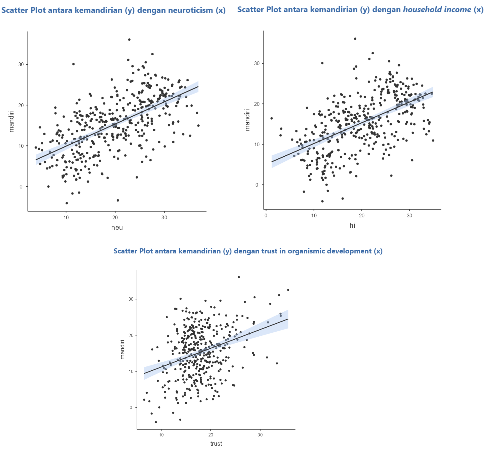
Coba kita lihat lebih dekat…
- Kemudian masukkan idsekolah pada kolom Group
- Fungsinya, kita akan mendapatkan garis regresi untuk masing-masing sekolah yang berbeda
- Apa yang terjadi?
Scatterplot subkelompok
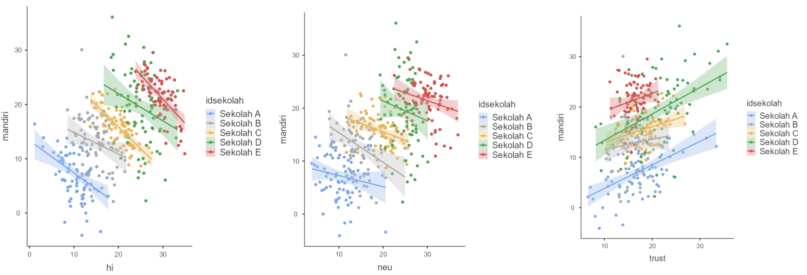
Ada yang janggal.. 🤔
Neuroticism dan pendapatan keluarga ternyata menunjukkan korelasi negatif dengan tingkat kemandirian, dengan intercept dan kemiringan (slopes) yang bervariasi di setiap sekolah.
Selain itu, meskipun trust menunjukkan korelasi positif di semua sekolah, tetapi intercept dan slope nya juga bervariasi di setiap sekolah
Padahal, berdasarkan analisis yang kita lakukan di sesi sebelumnya, disimpulkan bahwa neuroticism ibu dan kemandirian anak korelasinya positif (lihat output di samping).
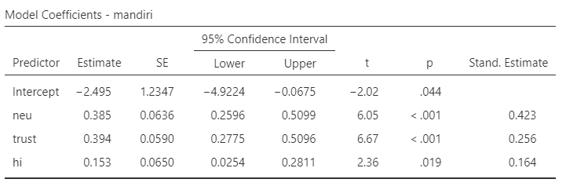
Simpson’s paradox
- Fenomena ini dikenal sebagai Simpson’s paradox
- ..yaitu ketika tren yang tampak di setiap sub-kelompok berbalik arah atau menghilang sama sekali ketika data dari semua kelompok digabungkan (aggregated).
- Kalau Simpson’s paradox diabaikan, kesimpulan bisa terkontaminasi ecological/atomistic fallacy
- Terjadi ketika peneliti salah menyimpulkan suatu gejala yang skalanya individual, padahal yang dianalisis sesungguhnya fenomena di level yang lebih besar (kelompok atau sub-kelompok) – atau sebaliknya
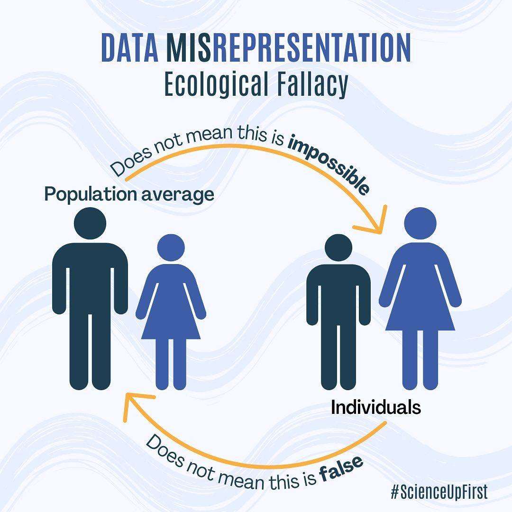
Contoh Simpson’s paradox
- Suatu studi longitudinal di Whickham, Inggris (Appleton dkk., 1996) menyimpulkan bahwa angka kematian perokok justru lebih rendah dibanding bukan perokok (24% vs. 31%), sehingga memberikan kesan bahwa perokok berusia lebih panjang daripada yang bukan perokok❌
- Tapi ketika data dipilah berdasarkan kelompok usia, perokok justru memiliki angka kematian yang lebih tinggi di semua kelompok usia
- Temuan yang counterintuitive ini terjadi karena di awal penelitian, usia perokok rata-rata lebih muda daripada partisipan yang bukan perokok, sehingga usia menjadi variabel confounding yang membalikkan arah hubungan di level sampel/agregat
Struktur sampel bersarang/berjenjang
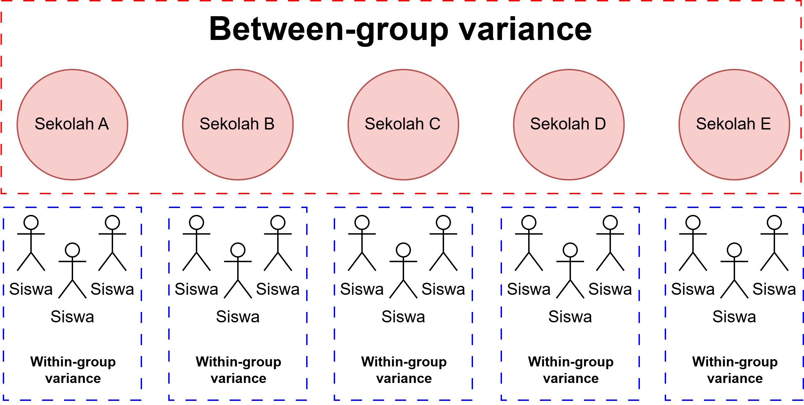
Apa yang harus dilakukan?
- Kita abaikan saja dan langsung menggunakan regresi OLS, dengan atau tanpa informasi mengenai pengelompokan data sebagai variabel kontrol
- Masalahnya, data/observasi kita sangat bergantung pada pengelompokan unit analisis
- Kalau begitu, dependensi ini melanggar asumsi OLS (data/observasi dan residual harus independen)
- Efeknya, standard error yang diestimasi oleh model terlalu kecil (karena mengabaikan varians dependen variabel yang ditentukan oleh kelompok)
- Varians variabel dependen yang tidak bisa dijelaskan (residual) akan makin besar
- Kesimpulan/inferensi yang ditarik menjadi tidak tepat (ingat ecological fallacy❗), sehingga risiko terjadinya type I error meningkat.
Apa yang harus dilakukan?
- Bagaimana kalau pengelompokan (grouping variable) dimasukkan aja dalam regresi OLS sebagai variabel moderator
- Dengan begitu, estimasi standard error bisa disesuaikan dengan menggunakan marginal model
- Kelebihannya, estimasi standard error akan lebih presisi, tetapi kita tetap tidak bisa membandingkan variasi antar-kelompok (between-group variance)
- Kalau diagregat? Jadi, unit analisis yang tadinya individual, menjadi kelompok.
- Ukuran sampel menjadi lebih sedikit, sehingga statistical power menjadi lebih rendah❗
Fixed dan random effects
Model fixed effects
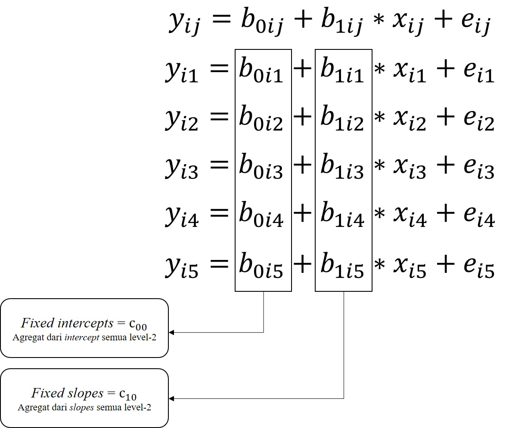
Model random effects
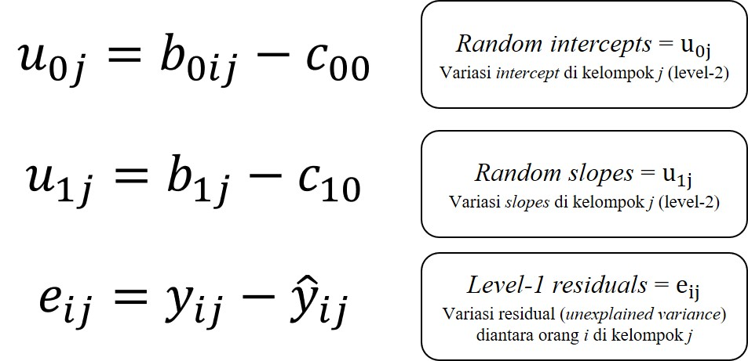
Full model
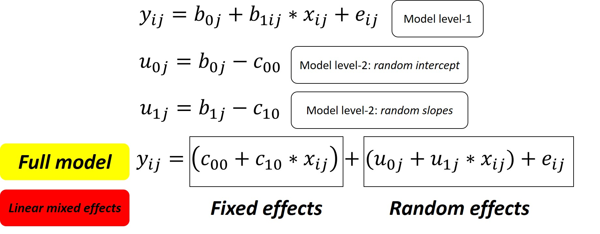
Fixed vs. random effects: Apa bedanya?
Fixed effects
- Mengestimasi rata-rata populasi — nilai koefisiennya (intercept dan slope) sama untuk semua kelompok
- Menjawab pertanyaan: “Seberapa besar kontribusi X menjelaskan Y secara keseluruhan?”
- Contoh: rata-rata intercept (c00) dan rata-rata slope (c10) — berlaku di seluruh sekolah
Random effects
- Mengestimasi variasi di sekitar nilai rata-rata — seberapa jauh setiap kelompok menyimpang dari nilai populasi
- Menjawab pertanyaan: “Seberapa besar perbedaan antar-kelompok dalam intercept dan/atau slope?”
- Contoh: varians random intercept (σ²U0) dan random slopes (σ²U1) — menggambarkan variasi antar-sekolah
Singkatnya
Fixed effects = parameter model yang berlaku pada seluruh sampel, yang merupakan nilai agregat (rata-rata) masing-masing subkelompok; Random effects = seberapa besar parameter model di setiap subkelompok menyimpang dari rata-rata itu.
Kovarians antara random intercept dan random slopes (σU0U1)
- Nilainya positif, maka semakin besar intercept akan diasosiasikan dengan nilai slope yang lebih besar
- Kalau slopenya positif, maka korelasi X-Y semakin positif. Tetapi kalau negatif, maka korelasinya melemah.
- Apabila diketahui korelasi antara pendapatan dan kemandirian adalah negatif, maka kalau σU0U1 positif, artinya di sekolah yang rata-rata kemandirian siswanya lebih tinggi, maka korelasi antara pendapatan per bulan dengan tingkat kemandirian siswa akan melemah.
- Nilainya negatif, maka semakin tinggi intercept akan diasosiasikan dengan slope yang lebih kecil
- Kalau slopenya positif, maka korelasi X-Y melemah, sedangkan kalau negatif, maka akan semakin negatif.
- Apabila diketahui korelasi antara pendapatan dan kemandirian adalah negatif, maka kalau σU0U1 negatif, artinya di sekolah yang rata-rata kemandirian siswanya lebih tinggi, maka korelasi antara pendapatan per bulan dengan tingkat kemandirian siswa akan makin negatif.
Parameter yang diestimasi dalam lme
Fixed intercept (c00)
Fixed slopes (c10)
Varians random intercept (σ2U0)
Varians random slopes (σ2U1)
Kovarians antara random intercept dan random slopes (σU0U1)
Varians residual level-1 (σ2e)
Yuk kita coba! 💪
Pastikan module GAMLj sudah terpasang di jamovi
Latihan 3️⃣: Kembali ke dataset sekolah 🏫
Kita akan membuat linear mixed model dengan tingkat pendapatan sebagai prediktor, dan tingkat kemandirian anak sebagai variabel dependen.
Buat “model kosong” (null model)
Yaitu model yang isinya hanya intercept saja, tidak ada prediktornya (slopes)
Pada menu bar, klik Linear Models, pilih mixed models
- Masukkan mandiri dalam kolom dependent variable
- Masukkan idsekolah dalam kolom cluster variables
- Pada menu random effects masukkan intercept|idsekolah dalam kolom random coefficients
Pada menu model comparison centang more fit indices
Catat nilai AIC yang tersedia dalam tabel additional indices
Di bagian Regresi Linear, sudah dijelaskan tentang fungsi AIC dan BIC
Latihan 3️⃣: Model dengan prediktor
Bikin linear mixed model dengan prediktor
Masukkan hi dalam kolom covariates
Pada menu random effects, masukkan juga hi|idsekolah, karena kita akan mengestimasi random slopes-nya juga
- Centang opsi LRT for Random Test dan random coefficients
Pada menu covariates scaling, ubah centered menjadi centered clusterwise
- Berkaitan dengan partitioning (akan dijelaskan di bagian selanjutnya)
Fixed coefficients
- Tes kecocokan model (Omnibus Test) signifikan menggambarkan data (F(1, 3.28) = 51.7, p = .004)
- Korelasi antara tingkat pendapatan keluarga dengan kemandirian anak negatif, bukan positif, seperti hasil OLS sebelumnya
- Anak yang dibesarkan di keluarga dengan tingkat pendapatan yang tinggi, justru memiliki tingkat kemandirian yang rendah (B = -0.623 95% CI [-0.794, -0.453], SE = 0.086, t = -7.29, p = .004).
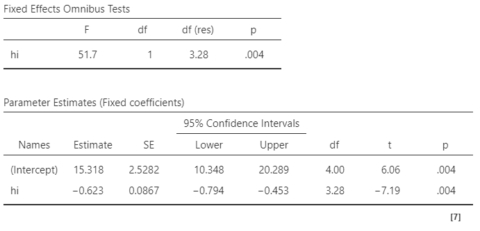
Random coefficients 1️⃣
- Bandingkan varians random intercept (σ2U0) dan varians random slopes (σ2U1) dengan varians residual
- Varians random intercept lebih besar, sedangkan varians random slopes lebih kecil
- Artinya, tingkat kemandirian berbeda signifikan antar-sekolah, namun kekuatan korelasi/hubungan antara pendapatan rumah tangga dengan tingkat kemandirian relatif tidak berbeda antar sekolah
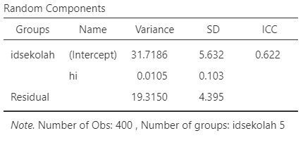
Interpretasi random intercept dan random slopes (vs. residual)
| Varians Random Intercept |
Varians Random Slope |
Interpretasi |
|---|---|---|
| Besar | Kecil | Kelompok berbeda secara substansial dalam rata-rata outcome, tetapi hubungan antara prediktor dan outcome relatif seragam di semua kelompok |
| Kecil | Besar | Kelompok memiliki rata-rata outcome yang serupa, tetapi kekuatan (dan/atau arah) hubungan antara prediktor dan outcome sangat bervariasi antar kelompok |
Interpretasi random intercept dan random slopes (vs. residual)
| Varians Random Intercept |
Varians Random Slope |
Interpretasi |
|---|---|---|
| Besar | Besar | Kelompok berbeda baik dalam rata-rata outcome maupun dalam hubungan prediktor–outcome — periksa kovarians intercept-slope (σU0U1) untuk melihat apakah kelompok dengan rata-rata tinggi juga memiliki slope yang lebih besar atau lebih kecil |
| Kecil | Kecil | Sedikit variasi antar kelompok — struktur multilevel mungkin tidak diperlukan, pertimbangkan model regresi OLS |
Random coefficients 2️⃣
- Menguji efek sekolah (kelompok)
Intra-class correlation, yaitu merupakan proporsi total varians variabel dependen yang dapat dijelaskan oleh variasi antar kelompok
Likelihood ratio test (LRT), yaitu teknik untuk menguji ada/tidaknya perbedaan varians antar-kelompok
LRT dan ICC juga bisa berfungsi sebagai indikator perlu/tidaknya
lmedilakukan
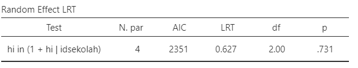
Random coefficients 3️⃣
ICC = 0.622, artinya 62.2% varians tingkat kemandirian siswa dijelaskan oleh perbedaan sekolah.
ICC di atas 0.1 biasanya menunjukkan
lmeadalah opsi yang lebih baik daripada OLS.LRT menunjukkan bahwa tidak ada perbedaan yang signifikan antara varians tingkat kemandirian antar-sekolah (LRT(2) = 0.627, p = .731), tetapi…
…struktur multilevel tetap dipertahankan mengingat besarnya ICC yang mengindikasikan ketidakindependenan observasi dalam sekolah yang sama.
LRT bisa jadi tidak signifikan karena power rendah akibat kita hanya punya sedikit kelompok (≤ 5 sekolah) dalam dataset
Random coefficients 4️⃣
Korelasi antara random slope dan random intercept (σU0U1) nilainya negatif, sedangkan fixed slopenya sendiri juga negatif
Artinya, sekolah yang siswanya rata-rata lebih mandiri, korelasi negatif pendapatan keluarga terhadap kemandirian lebih kuat (pendapatan tinggi, kemandirian justru makin turun drastis)
Jadi pendapatan keluarga lebih kuat dan negatif efeknya pada tingkat kemandirian siswa, di sekolah dengan rata-rata kemandirian yang tinggi (i.e., intercept tinggi)
Apakah artinya lingkungan sekolah tidak berdampak pada kemandirian anak?
- Belum tentu😉 Periksa dulu contextual effect
- Akan kita eksplorasi di bagian selanjutnya
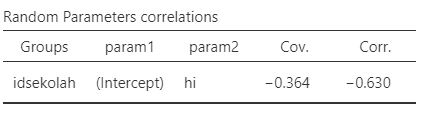
Random coefficients 5️⃣
- Tabel di samping adalah intercept dan slopes untuk masing-masing sekolah
- Sekolah E adalah sekolah dengan rata-rata kemandirian yang paling tinggi (intercept paling besar)
- Sekaligus sekolah dengan hubungan negatif yang paling kuat/besar antara pendapatan keluarga dan kemandirian (slope paling negatif), konsisten dengan σU0U1 yang negatif
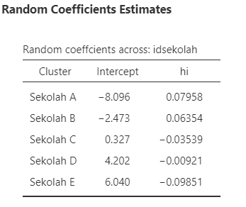
Model Comparison 1️⃣
AIC
- Apabila kita membandingkan “model kosong” (atas) dengan model yang ada prediktor (bawah), maka model yang terakhir lebih mampu menjelaskan varians kemandirian anak.
LRT test signifikan pada null model (atas) tetapi menjadi nonsignifikan pada model dengan prediktor (bawah)
Artinya, mempertahankan struktur bersarang memang pilihan tepat dan menguatkan dugaan sebelumnya bahwa LRT test yang tidak signifikan karena under-powered
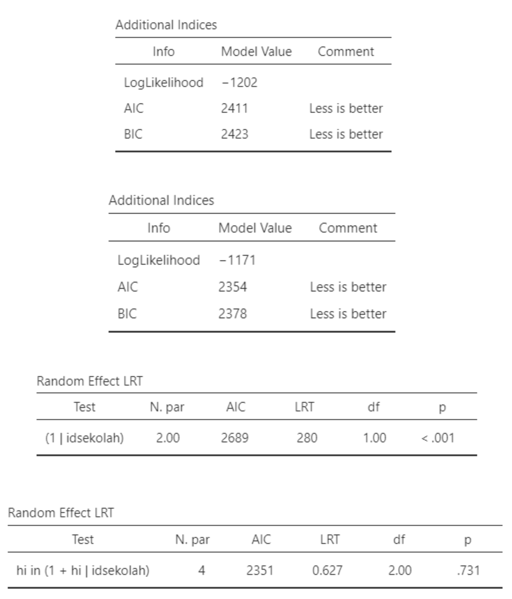
Model Comparison 2️⃣
R2 (Nakagawa & Schielzeth, 2012)
Marginal: proporsi varians variabel dependen yang dapat dijelaskan oleh fixed models saja
Conditional: proporsi varians variabel dependen yang dapat dijelaskan oleh fixed dan random models sekaligus
Varians yang dapat dijelaskan oleh fixed model saja hanya 6.4%, sedangkan oleh keseluruhan model adalah 64.6%.
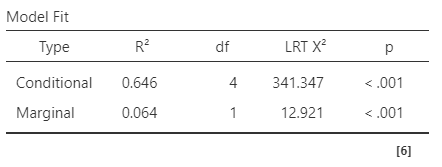
Within-group effect
- Seberapa besar selisih Y dari 2 orang yang berada di kelompok yang sama, ketika selisih X-nya sebesar 1 poin?
- Seberapa besar perbedaan tingkat kemandirian dua orang anak yang berada dalam sekolah yang sama, ketika selisih tingkat pendapatan keluarga mereka berbeda sebesar 1 poin?
- Didapatkan dengan cara melakukan group-mean centering (akan dijelaskan di bagian berikutnya)
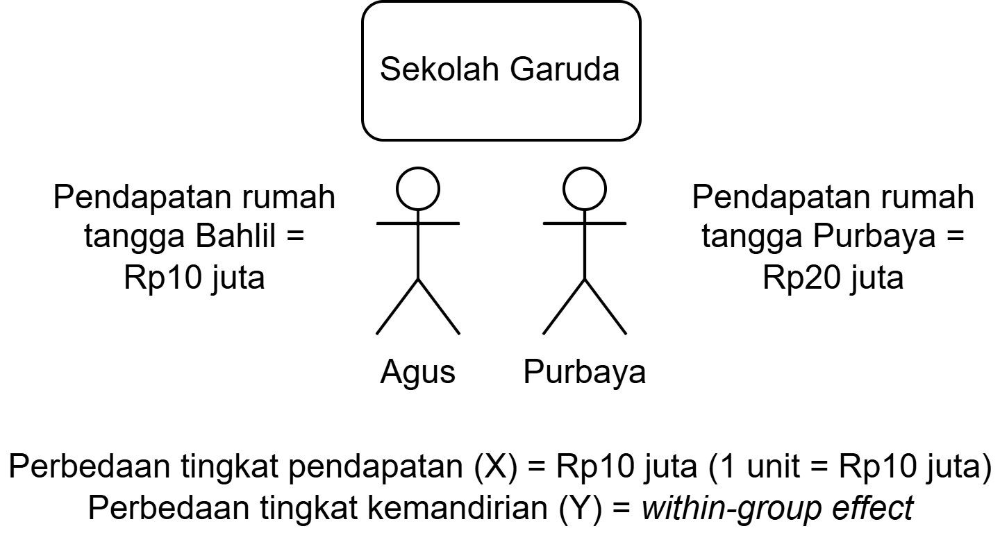
Between-group effect
- Seberapa besar selisih Y dari dua orang yang masing-masing berada pada rerata X kelompok mereka (yaitu, X individual = rerata kelompok), ketika rerata X kelompok mereka berbeda sebesar 1 poin?
- Seberapa besar perbedaan tingkat kemandirian dari dua siswa yang masing-masing berada pada rerata tingkat pendapatan keluarga di sekolah mereka (yaitu, tingkat pendapatan keluarga siswa tsb = rerata sekolah), ketika rerata tingkat pendapatan keluarga di sekolah mereka berbeda sebesar 1 poin?
- Didapatkan dengan cara memasukkan rerata kelompok ke dalam model
Contextual effects
- Seberapa besar selisih Y dua orang dari kelompok yang berbeda, namun dengan X yang sama, ketika rerata X kelompoknya berbeda sebesar 1 poin.
- Seberapa besar perbedaan tingkat kemandirian dua siswa dari dua sekolah yang berbeda, ketika tingkat pendapatan keluarga kedua siswa tersebut sama, tetapi rerata tingkat pendapatan keluarga di sekolah mereka berbeda sebesar 1 poin?
- Contoh contextual effects di psikologi: big-fish-little-pond effect (BFLPE)
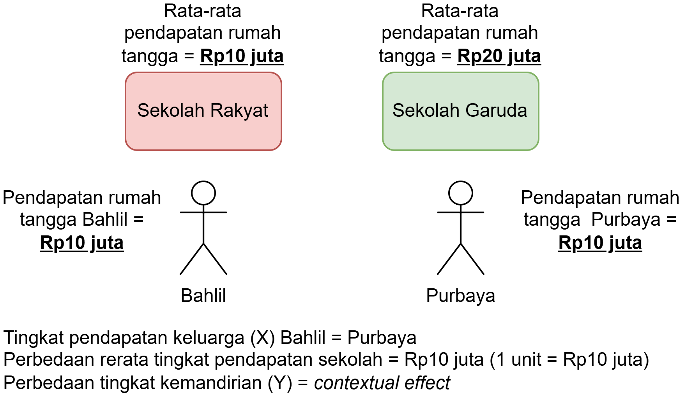
Contextual effects & partitioning 1️⃣
Untuk menghitung contextual effect, kita harus melakukan partitioning terlebih dahulu
Umumnya yang dipartisi/centering adalah variabel X, bukan Y
Prosedurnya menggunakan (Mundlak’s approach):
- Lakukan group-mean centering
- Hitung rerata tiap kelompok
- Masukkan keduanya ke dalam model
Contextual effects & partitioning 2️⃣
Group-mean centering
- Hitung group-mean centering dengan formula \[X_{within_{ij}} = X_{ij} - \bar{X}_{j}\]
- Sederhananya: nilai X individu dikurangi rata-rata X kelompoknya
- Pendapatan keluarga anak \(i\) dikurangi rata-rata pendapatan keluarga anak-anak di sekolah \(j\)
Masukkan skor variabel X yang sudah di centering dan rerata masing-masing kelompok ke dalam model
Contextual effect = Between-group effect - Within-group effect
Positif: dua orang dengan nilai X yang sama, tetapi dari kelompok berbeda (dengan rerata X kelompok berbeda 1 poin), maka orang dari kelompok dengan rerata X lebih tinggi cenderung memiliki Y lebih tinggi
Negatif: kebalikannya — kelompok dengan rata-rata X lebih tinggi justru memiliki rata-rata Y lebih rendah
Latihan 4️⃣: Contextual effects
Lakukan
lmedengan memasukkan hi_group_centered dan hi_gm dalam satu model yang samaMasukkan kedua variabel tersebut dalam fixed coefficients
Masukkan intercept (Intercept|idsekolah) dan hi_group_centered ke kotak random coefficients, kemudian pada menu effect correlation pilih
not correlatedPada menu covariates scaling, set keduanya pada
none(karena variabel sudah di group-mean centered secara manual)Lihat fixed slopes-nya untuk kedua prediktor
Warning
Jangan masukkan hi_gm ke random coefficient karena ini adalah rerata kelompok, sehingga nilainya sama untuk semua individu di kelompok yang sama.

Contextual effects
- Between (B = 0.732 95% CI [0.583, 0.881], SE = 0.075, t = 9.64, p = .002), maupun within-group effect (B = -0.621 95% CI [-0.786, -0.456], SE = 0.084, t = -7.386, p = .004) berhubungan dengan tingkat kemandirian siswa.
- Between-group effect: Ada bukti bahwa sekolah dengan rata-rata pendapatan keluarga yang lebih tinggi cenderung memiliki siswa yang lebih mandiri.
- Within-group effect: Di masing-masing sekolah yang sama, siswa dengan tingkat pendapatan keluarga yang lebih tinggi cenderung memiliki tingkat kemandirian yang lebih rendah.
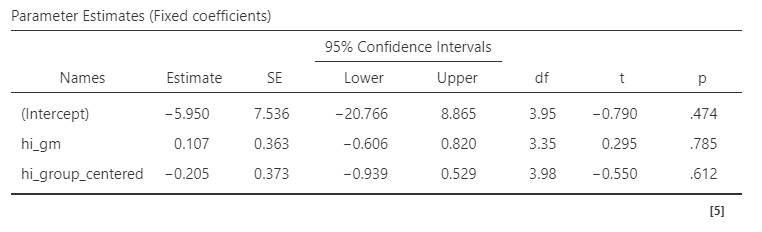
Contextual effects
- Contextual effects (\(\beta_{between_{j}}-\beta_{within_{ij}}\) = 0.732 - (-0.621) = 1.353) menunjukkan bahwa terdapat pengaruh tambahan dari konteks sekolah (e.g., rata-rata tingkat pendapatan keluarga di level sekolah, yang cukup substansial) terhadap kemandirian siswa, yang tidak dapat dijelaskan oleh/diluar dari tingkat pendapatan keluarga siswa itu sendiri (di level individual).
Bagaimana melaporkannya? 1️⃣
Untuk menguji hipotesis bahwa ada perbedaan rerata tingkat kemandirian anak, dan korelasi antara pendapatan keluarga dengan tingkat kemandirian anak di masing-masing sekolah, peneliti melakukan analisis linear mixed effect. Tingkat kemandirian anak dijelaskan sebagai fungsi dari tingkat pendapatan keluarga, dengan mengontrol asal sekolah (PAUD) anak. Sebelum melakukan analisis, tingkat pendapatan keluarga dipartisi dengan cara menguranginya dengan rata-rata tingkat pendapatan keluarga di masing-masing sekolah (group-mean/cluster-based centering). Pengujian model menghasilkan kesimpulan bahwa model tepat menggambarkan data (F(1, 3.28) = 51.7, p = .004), sehingga dapat disimpulkan bahwa tingkat pendapatan keluarga dan kemandirian anak, berkaitan secara berarti.
Bagaimana melaporkannya? 2️⃣
Model fixed effects menunjukkan bahwa ada bukti bahwa perbedaan tingkat pendapatan keluarga di dalam sekolah yang sama berhubungan dengan perbedaan tingkat kemandirian (within-group effect: B = -0.621 95% CI [-0.786, -0.456], SE = 0.084, t = -7.386, p = .004). Artinya, di dalam sekolah yang sama, siswa dengan tingkat pendapatan keluarga yang lebih tinggi cenderung memiliki tingkat kemandirian yang lebih rendah. Selain itu, ada bukti bahwa sekolah dengan rata-rata tingkat pendapatan keluarga yang lebih tinggi cenderung memiliki rata-rata tingkat kemandirian yang lebih tinggi (between-group effect: B = 0.732 95% CI [0.583, 0.881], SE = 0.075, t = 9.64, p = .002). Model random effects menunjukkan bahwa ada perbedaan rata-rata tingkat kemandirian antar-kelompok (LRT(1) = 8.18, p = .004) yang signifikan antar sekolah. Contextual effects ditemukan sebesar 1.353, yang menunjukkan bahwa ada pengaruh tambahan dari konteks sekolah yang cukup substansial terhadap tingkat kemandirian siswa, di luar pengaruh pendapatan keluarga siswa itu sendiri.”
Latihan mandiri 2️⃣
Lakukan analisis
lmeuntuk mengetahui:Apakah varians tingkat kemandirian anak dapat dijelaskan oleh sekolah tempat anak tersebut belajar?
Apakah varians korelasi antara kecenderungan neuroticism ibu dengan kemandirian anak juga dapat dijelaskan oleh sekolah tempat anak tersebut belajar?
Seberapa besar perbedaan tingkat kemandirian dua orang anak yang berada di sekolah yang berbeda, yang ibunya sama-sama pencemas, apabila rata-rata neuroticism wali murid di dua sekolah tersebut berbeda sebesar 1 poin?
Yang belum dibahas…
Kalau korelasi antara X dan Y tidak linear, pakai apa dong?
- Jelas tidak bisa menggunakan
lme. Alternatifnya, bisa menggunakan generalized additive mixed model (GAMM).
- Jelas tidak bisa menggunakan
Kalau prediktornya level-2, bagaimana?
Bagaimana cara merencanakan jumlah sampelnya?
Bagaimana kalau sampelnya bersarang/berjenjang level-3, bahkan lebih?
Bagaimana kalo terjadi interaksi antara variabel prediktor level-1 dengan level-2 (cross-level interactions)?
Bagaimana dengan pengukuran berulang?
Bayangkan kita mengukur tingkat kecemasan menteri pada:
- Sebelum BBM naik (T1)
- Saat kebijakan BBM naik diumumkan (T2)
- Seminggu sesudah BBM dinyatakan naik (T3)
Kecemasan Menteri Purbaya di T1 dan T2 sangat mungkin berkorelasi, karena Purbaya yang sama yang diukur dua kali pada dua titik waktu (time points atau beep dalam literatur experience sampling).
Ketika ini terjadi, maka model melanggar asumsi independensi residual (untuk level-2) dari
lmebiasa.- Kalau diabaikan, standard error akan terlalu kecil ➡️ risiko Type I error meningkat.
Oleh karena itu, dalam desain eksperimen within-subject, penelitian longitudinal, dan experience sampling, peneliti harus mempertimbangkan struktur korelasi residual antarwaktu pengukuran.
Lanjutkan dengan belajar mandiri:
lmeuntuk pengukuran berulang dan experience sampling.
The problem with linear relationship

Ada pertanyaan❓

Note
- Paparan disusun dengan menggunakan dan Quarto dengan template dari UNAIR Theme.
- Kontak saya via amelia.zein@psikologi.unair.ac.id